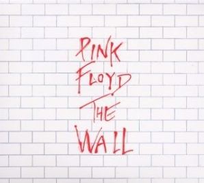

The Wall is the 11th studio album released by British Psychedelic Rock Band, Pink Floyd. The album, like Pink Floyd's other works is a Concept Album.  The album follows themes of isolation, abandonment, war, fame, and the emotional “walls” people build to protect themselves from the outside world. Through the story of its main character, Pink, the album explores how trauma and alienation can drive a person to disconnect completely from reality. The album is often considered to be one of Pink Floyd's most emotionally open albums, with songs like The Thin Ice and Comfortably Numb which's guitar solo is considered to be in the list of the greatest in history.
After the album's release, it recieved universal acclaim from various sources, like Craccum, All Music Magazine, and many others. They all shared the same unanimous conclusion, that this album is a masterpiece. And, it's no wonder why they think that! The Wall is often considered to be the first response to the question "What is a concept album?"
The story starts J.A. Pinkerton, an English soldier, who died in World War II from a German bombing in Anzio, Italy. After the death, it was left to his wife to take care of their child, Pink. Pink didn't have an ordinary childhood. He was a part of a very oppressive school system (As seen in the school scenes i.e.: Another Brick In The Wall Pt. 2) which according to the lyrics of the song The Happiest Days of Our Lives
"When we grew up and went to school
There were certain teachers who would hurt the children in any way they could
By pouring their derision upon anything we did"
His mother was also very overprotective of him throughout his childhood. In the song Mother We can hear that after his husband died, she became overprotective of Pink, shielding him from everything even remotely resembling harm. This, of course only isolated Pink even more, and his metaphorical wall only grew taller. His mother, of course didn't give up supporting Pink in everything no matter if it's good or bad. We can hear that in the lyric
"Of course Mamma's gonna help build the wall"